Explore o mundo dos dinossauros
Conheça espécies que habitaram a Terra há milhões de anos, descubra suas características e viaje pelo passado.

Alossauro
Allosaurus fragilis
Grande predador do período Jurássico.
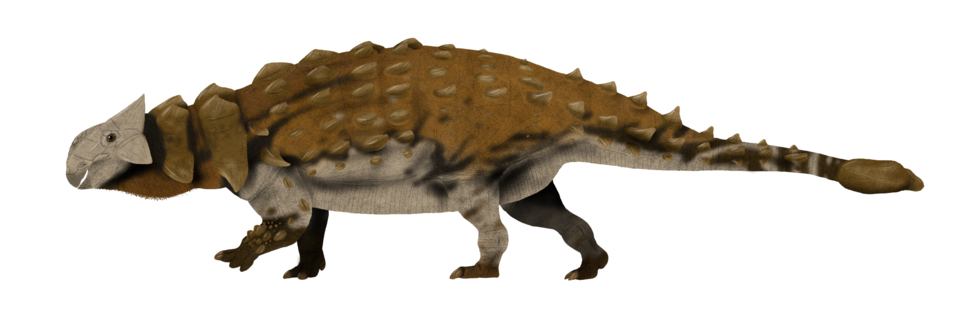
Anquilossauro
Ankylosaurus magniventris
Herbívoro blindado, com uma clava óssea na cauda.
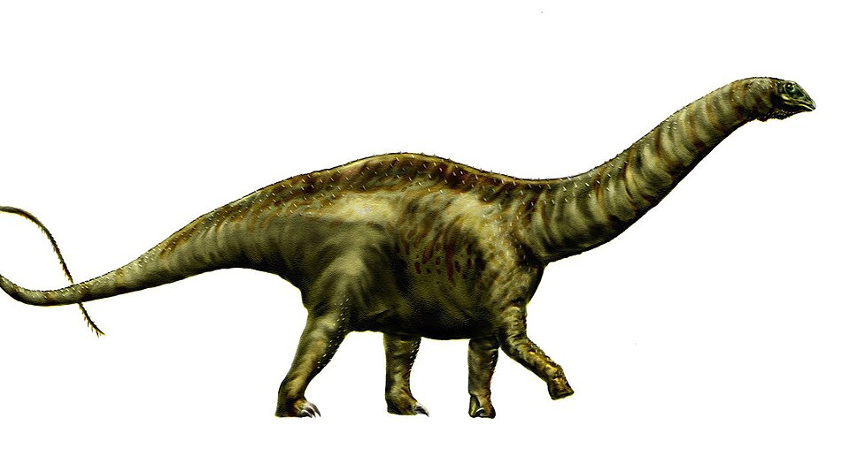
Apatossauro
Apatosaurus louisae
Saurópode gigante de pescoço e cauda longos.

Archaeopteryx
Archaeopteryx lithographica
Ave primitiva que liga os dinossauros às aves modernas.

Argentinossauro
Argentinosaurus huinculensis
Um dos maiores dinossauros terrestres já conhecidos.
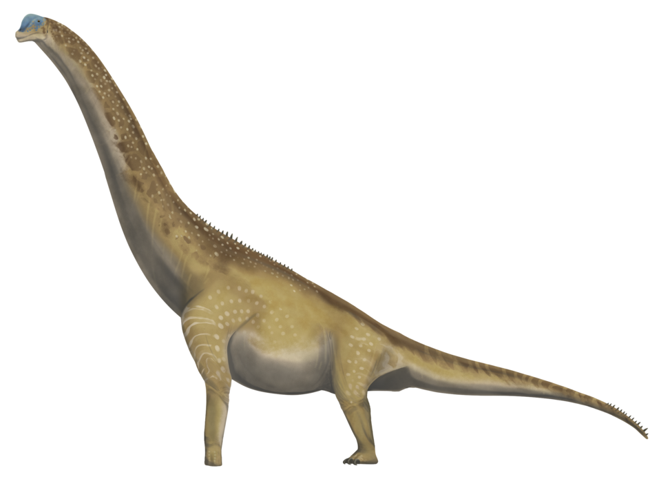
Braquiossauro
Brachiosaurus altithorax
Herbívoro de pescoço altíssimo e patas dianteiras longas.
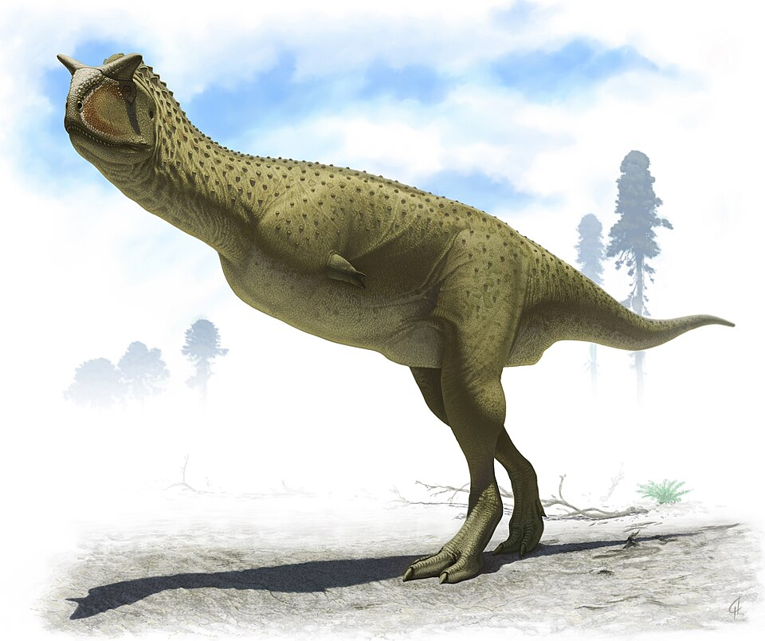
Carnotauro
Carnotaurus sastrei
Predador com chifres acima dos olhos e braços minúsculos.
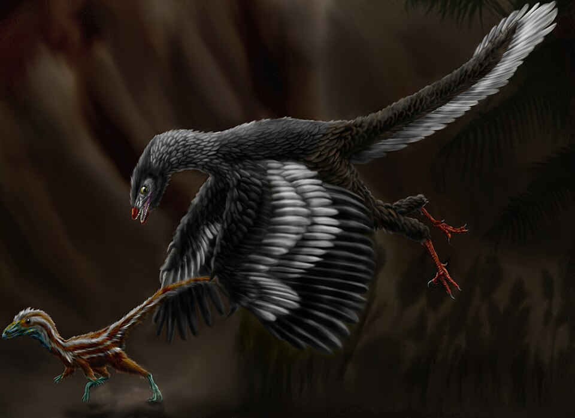
Compsognato
Compsognathus longipes
Um dos menores dinossauros carnívoros conhecidos.

Deinonico
Deinonychus antirrhopus
Predador ágil com uma garra em forma de foice.
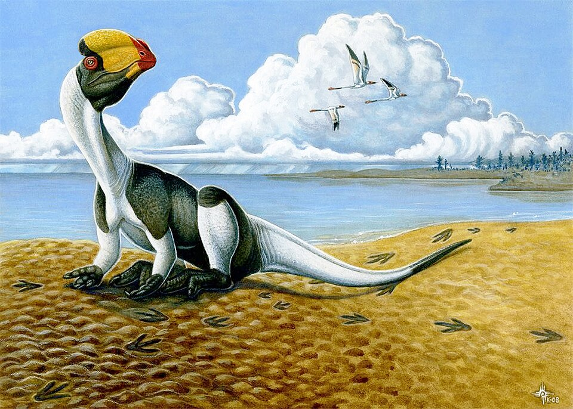
Dilofossauro
Dilophosaurus wetherilli
Carnívoro com duas cristas sobre a cabeça.

Diplodoco
Diplodocus carnegii
Saurópode muito comprido, de cauda longa e fina.
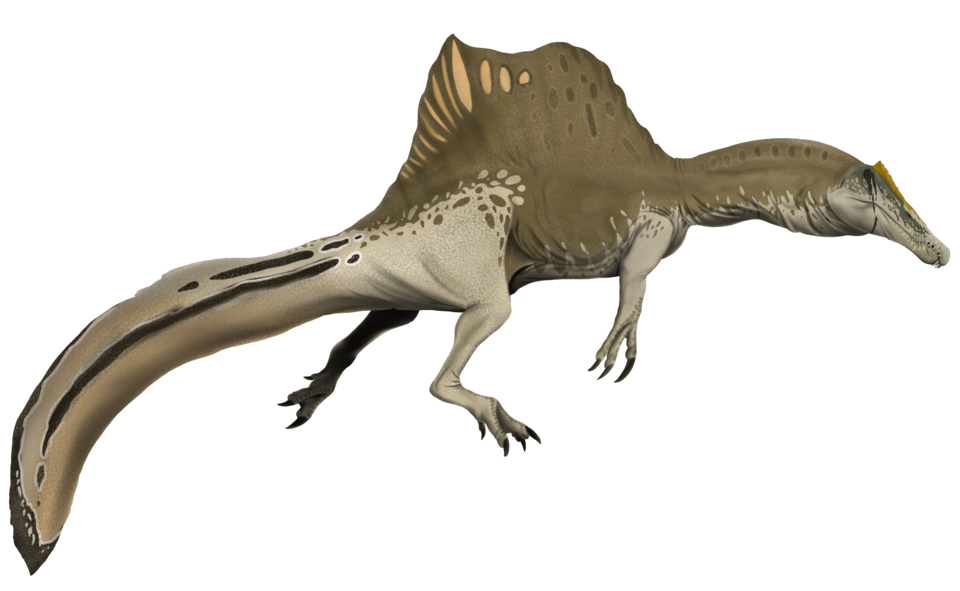
Espinossauro
Spinosaurus aegyptiacus
Predador com uma vela nas costas e hábitos ligados à água.
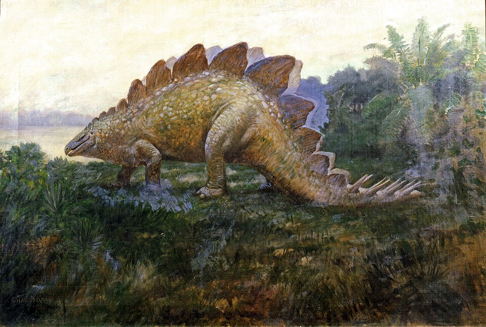
Estegossauro
Stegosaurus stenops
Herbívoro com placas nas costas e espinhos na cauda.
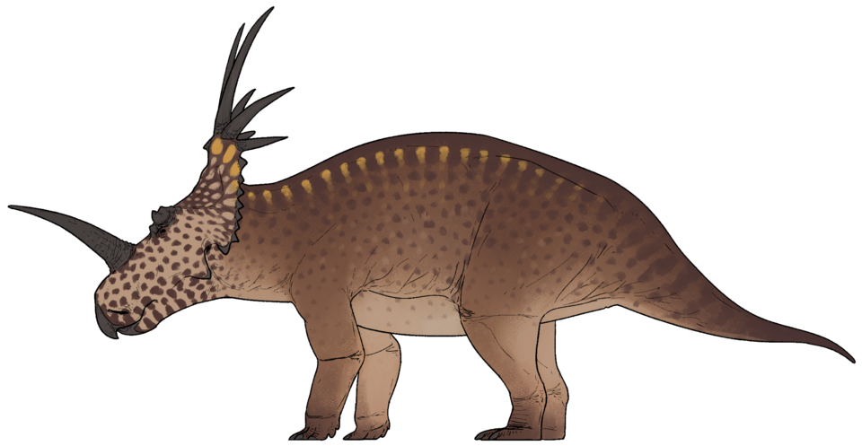
Estiracossauro
Styracosaurus albertensis
Dinossauro com um colar de espinhos ao redor da cabeça.

Galimimo
Gallimimus bullatus
Dinossauro veloz que lembrava um avestruz.

Giganotossauro
Giganotosaurus carolinii
Um dos maiores predadores terrestres já descobertos.
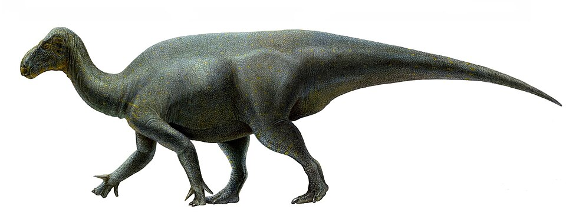
Iguanodonte
Iguanodon bernissartensis
Herbívoro com grandes espinhos nos polegares.

Microraptor
Microraptor gui
Pequeno dinossauro com penas e quatro asas.
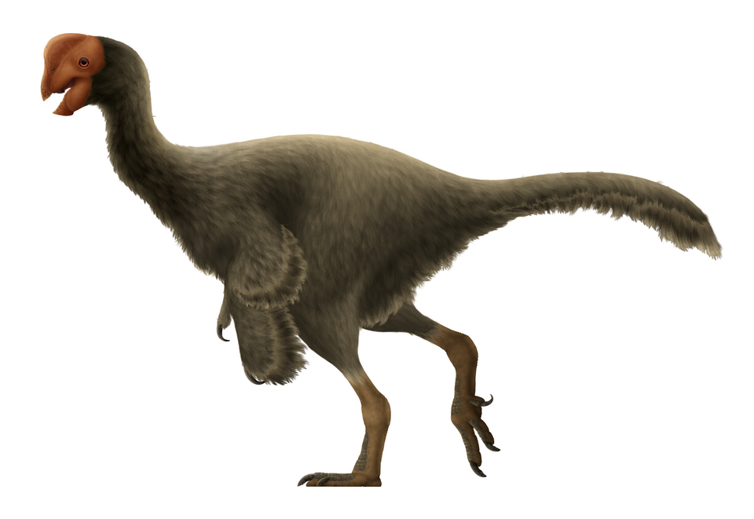
Oviraptor
Oviraptor philoceratops
Dinossauro de bico sem dentes, encontrado junto a ninhos.
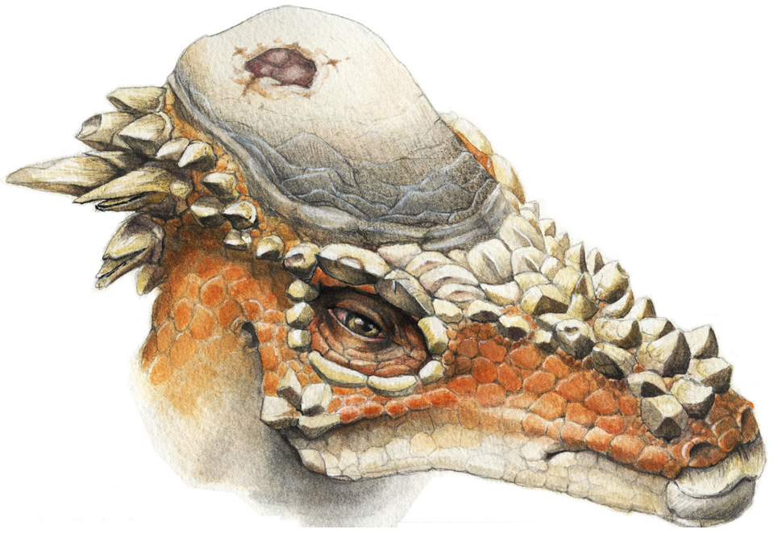
Paquicefalossauro
Pachycephalosaurus wyomingensis
Herbívoro de crânio grosso em formato de cúpula.
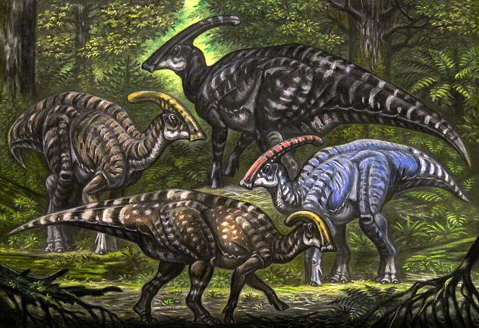
Parassaurolofo
Parasaurolophus walkeri
Herbívoro com uma longa crista tubular na cabeça.
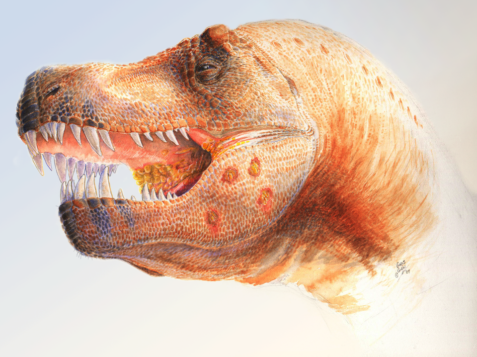
Tiranossauro rex
Tyrannosaurus rex
Um dos mais conhecidos predadores do período Cretáceo.
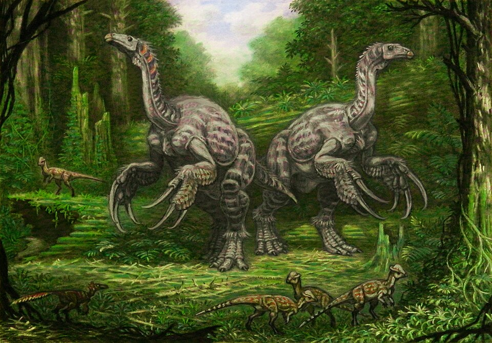
Terizinossauro
Therizinosaurus cheloniformis
Dinossauro com garras gigantescas nas mãos.
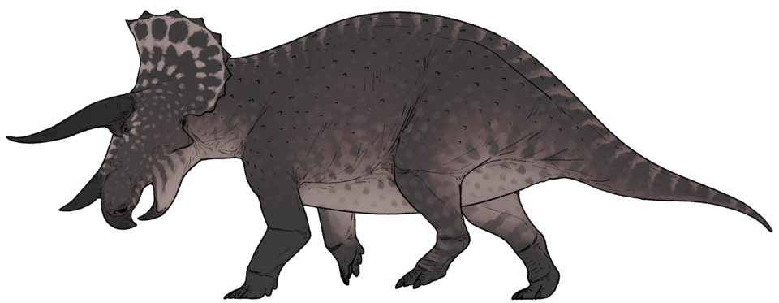
Triceratops
Triceratops horridus
Herbívoro conhecido por seus três chifres.
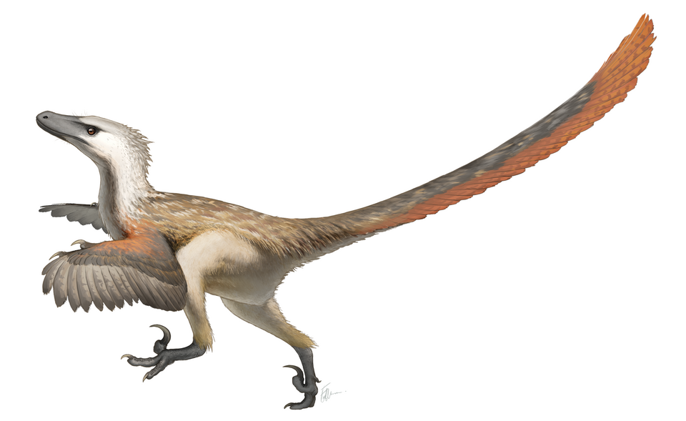
Velociraptor
Velociraptor mongoliensis
Pequeno dinossauro predador que viveu na Ásia.